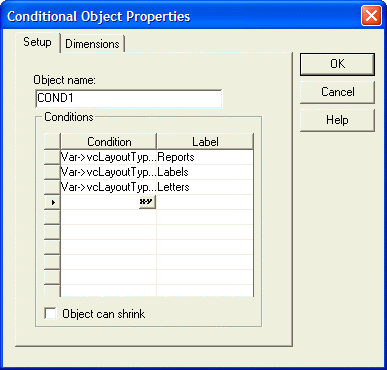
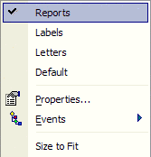
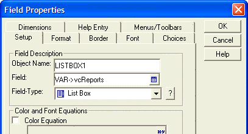
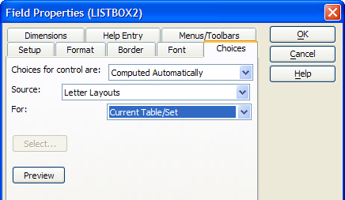
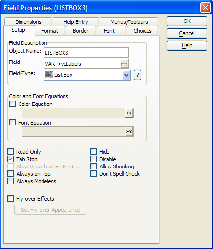
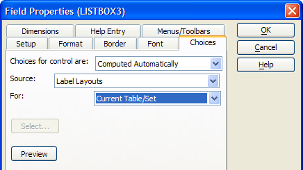

Creating and Using a Conditional Object V5
A conditional object is a multi-level rectangular frame used to conditionally display and hide groups of objects. Conditional objects behave like tabbed objects, except that instead of tabs, each page is automatically selected by Alpha Five based on the expressions you enter. A page is selected when the expression evaluates to TRUE. If no expression evaluates to true, the default page is shown.
 Note : This example is appropriate for Alpha Five Version 5. For an explanation and example of the procedure in Alpha Five Version 6, see Placing a Conditional Object V6 in the Form Design section of the Alpha Five User Guide.
Note : This example is appropriate for Alpha Five Version 5. For an explanation and example of the procedure in Alpha Five Version 6, see Placing a Conditional Object V6 in the Form Design section of the Alpha Five User Guide.
The COND1 conditional object has four pages that become visible or invisible depending on the value of the variable vcLayoutType.
Value of vcLayoutType | Menu Label | When Selected |
| "Reports" | "Reports" | Displays Listbox1. |
| "Labels" | "Labels" | Displays Listbox2. |
| "Letters" | "Letters" | Displays Listbox3. |
| other values | "Default" | Displays blank page. |
The form uses four variables to keep track of the user's selections.
Variable | Function |
| vcLayoutType | Records whether the user has selected Reports, Labels, or Letters in the DROPDOWN1 list box. |
| vcReports | Records the user's report selection in the Listbox1 list box. |
| vcLabels | Records the user's label selection in the Listbox2 list box. |
| vcLetters | Records the user's letter selection in the Listbox3 list box. |
Procedure: Creating the Form's Variables
The COND1 conditional object assumes that the developer has created the necessary form variables:
In the Form menu select Variables....
Create the vcReports, vcLetters, and vcLabels variables as Level "Layout" and type "Character".
Enter the variables' initial values of "Customer List", "Letter to Customers", and "Customer Labels". These values match entries in Listbox1, Listbox2, and Listbox3 and provide valid default selections.
Create the vcLayoutType variable as Level "Session" and type "Character".
Enter the default value of "Report" for vcLayoutType. This value matches a value in the Dropdown1 list box and provides a valid default selection.
Click the OK button to return to the Form Editor.

Procedure: Creating the COND1 Conditional Object
The following procedure assumes that the developer has opened the form in the Form Editor. Follow these instructions to create a conditional object similar to COND1 :
Select the conditional object tool on the Toolbar.
Sketch the object's dimensions on the form.
Right click on the object and select Properties....

Click the
 button on the first line of the Condition column.
button on the first line of the Condition column.In the Expression Builder enter the expression Var->vcLayoutType = "Reports" and click the OK button.
Enter "Reports" into the first line of the Label column.
Click the
button on the second line of the Condition column.Enter the expression Var->vcLayoutType = "Labels" and click the OK button.
Enter "Labels" into the second line of the Label column.
Click the
button on the third line of the Condition column.Enter the expression Var->vcLayoutType = "Letters" and click the OK button.
Enter "Letters" into the third line of the Label column.
Click the OK button to return to the Form Editor.
Right click the conditional object to display the following menu.

Alpha Five automatically created the Default page.
Right click the conditional object.
Select Reports to display the Reports page.
Place a list box on the page.
On the Setup tab of the Field Properties dialog box, select "VAR->vcReports" in the Field list.

Click the Choices tab.
Select "Computed Automatically" from the Choices for control are list.
Select "Report Layouts" in the Source list.
Click the OK button to return to the Form Editor.

Right click the conditional object.
Select Letters to display the Letters page.
Place a list box on the page.
On the Setup tab of the Field Properties dialog box, select "VAR->vcLetters" in the Field list.
Click the Choices tab.
Select "Computed Automatically" from the Choices for control are list.
Select "Letter Layouts" in the Source list.
Click the OK button to return to the Form Editor.

Right click the conditional object.
Select Letters to display the Letters page.
Place a list box on the page.
On the Setup tab of the Field Properties dialog box, select "VAR->vcLabels" in the Field list.

Click the Choices tab.
Select "Computed Automatically" from the Choices for control are list.
Select "Label Layouts" in the Source list.
Click the OK button to return to the Form Editor.

See Also